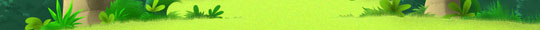

|
F.A.Q - Fermes lunaires d’ekoloko
 Que sont les Fermes lunaires d’ekoloko?
Les Pionniers ont le privilège de participer à une aventure passionnante : peupler les lunes d’ekoloko. Sur leur lune, ils peuvent construire leur maison et faire pousser leur récolte dans leur propre Ferme. La récolte sert à compléter des quêtes, à faire des échanges avec des amis et bientôt à obtenir des articles dans les magasins d’ekoloko en faisant des échanges.
Back To Top.

Peut-on faire pousser n’importe quelle plante sur n’importe quelle lune?
Non. Certaines plantes ne peuvent pousser que sur certaines lunes. Ceci dit, les plantes appelées « générique » peuvent pousser partout (comme les pommes de terre ou le maïs).
Back To Top.
Comment exploiter ma Ferme lunaire?

Planter:
Clique sur l’un de tes champs. S’il peut être planté tu entreras alors dans la Serre d'ekoloko où tu pourras choisir les graines de la plante que tu veux faire pousser. Jette un œil à ton Niveau de Fermier ! De ce niveau dépendent les sortes de graines que tu peux faire pousser.
Arrosage:
Ta plantation a besoin d’eau pour pousser. Passe ta souris sur le champ que tu viens de planter. Une fenêtre apparaît alors avec deux information importantes:
1. Combien de temps reste-t-il avant que ta plantation puisse être récoltée
2. Combien de temps d’arrosage reste-t-il à ta plantation. Tu peux arroser ta plantation en cliquant sur le champ.
Récolte:
Des étoiles indiqueront que ta plantation a atteint sa taille maximale. Clique sur le champs pour récolter. Les produits de ta récolte apparaissent alors dans un onglet spécial dans ton inventaire. Attention ! La taille de ta récolte dépend de ton Niveau de Fermier.
Dessèchement et mort de la plantation:
Les plantations qui ne sont plus arrosées s’arrêtent d'abord de pousser. Si elles ne sont pas arrosées trop longtemps elles finissent par se dessécher et mourir. La récolte est alors perdue. Info importante : une fois que ta plantation a atteint sa taille maximale elle ne peut plus mourir. Cela te permet de garder une belle ferme!
Back To Top.

Il y a plusieurs couleurs de terre dans ma Ferme. Qu’est-ce que cela veut dire ?

Un champ qui n’est pas encore prêt à être planté.
Un champ qui est prêt à être planté. Clique dessus pour rentrer dans le magasin de graines.
Un champ qui a été arrosé il y a peu de temps. Passe ta souris dessus pour voir combien de « TEMPS D’ARROSAGE » il te reste (ce qui permet aux plantes de pousser).
 Un champ qui n’a pas été arrosé depuis longtemps. Clique dessus pour voir combien de temps de pousse reste-t-il à ta plantation. Dans tous les cas, il vaut mieux l’arroser un peu. Un champ qui n’a pas été arrosé depuis longtemps. Clique dessus pour voir combien de temps de pousse reste-t-il à ta plantation. Dans tous les cas, il vaut mieux l’arroser un peu.

Un champ desséché qui a vraiment besoin d’être arrosé.
Back To Top.

Que signifient mon “NIVEAU DE FERMIER” et mes « POINTS DE FERMIER »
Plus tu fais pousser de plantations, plus tu deviens bon fermier. Plante plus pour faire évoluer ton niveau de fermier. Lorsque tu auras atteint le dernier niveau de fermier, tu récolteras de plus grandes récoltes, tu pourras cultiver une plus grande variété de plantes et tu recevras des quêtes plus difficiles mais qui rapportent plus.
Back To Top.

Comment recevoir plus de champs prêts à être plantés ?

Le nombre de champs prêts à être plantés dépend de la quantité d’eau dont tu disposes pour arroser tes champs. Pour améliorer ta pompe à eau, clique dessus. Une fenêtre s’ouvrira avec le prix de l'amélioration et le temps que cela prendra. Quand tu auras réalisé l'amélioration, tu pourras alors arroser plus de champs.
Back To Top.

Qu’est qu’une Station d’Energie Solaire, et à quoi sert-elle ?
Chaque lune est équipée d’une Station d'Energie Solaire qui produit de l’électricité. Les stations de niveau supérieur produisent plus d’électricité et te permettent d'acheter et d’utiliser plus d’appareils dans ta maison.
Back To Top.

Comment faire évoluer ma Station d’Energie Solaire?
Clique sur la station. Une fenêtre s’ouvre et montrera le nombre de kokos nécessaire pour faire évoluer ta station, ainsi que combien de temps cela prendra.
Back To Top.

Que se passe-t-il si je n’arrose pas mon champ?
Si tu n’arroses pas ton champ, ta plantation va se dessécher et mourir, sauf si ta plantation est déjà arrivée à sa taille maximale.
Back To Top.

Qu’arrive-t-il à ma Pompe à Eau, à ma Station d’Energie Solaire et à mon Niveau de Fermier si je décide de changer de lune?
Si tu décides de déménager sur une autre lune tu resteras au même niveau de fermier mais ta pompe à eau et ta station d’énergie solaire resteront sur ta précédente lune. Tu recevras donc une station et une pompe de base que tu devras faire évoluer une nouvelle fois.
Back To Top.

|